Tiburón tigre
Es una especie de gran tamaño y agresiva que habita en aguas tropicales y templadas de todo el mundo. Se caracteriza por su patrón de rayas oscuras sobre un fondo amarillento o grisáceo, que le da su nombre común. Esta especie es considerada uno de los tiburones más peligrosos para los seres humanos debido a su comportamiento territorial y su dieta variada, que incluye presas como tortugas marinas, delfines y otros tiburones.
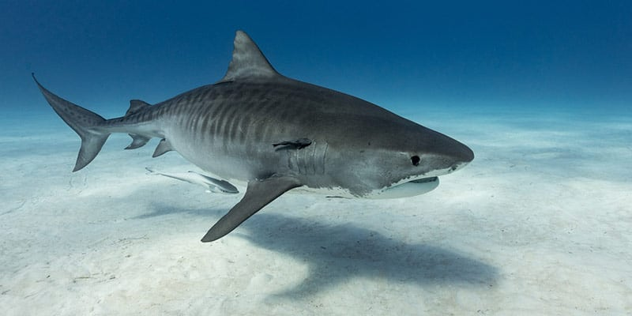Tiburón duende
Es una especie que habita en aguas profundas y se caracteriza por su inusual apariencia, con una cabeza larga y aplanada en forma de martillo y unos dientes largos y puntiagudos. Se cree que esta especie puede ser capaz de detectar campos eléctricos débiles, lo que le permite encontrar presas en la oscuridad de las profundidades marinas.
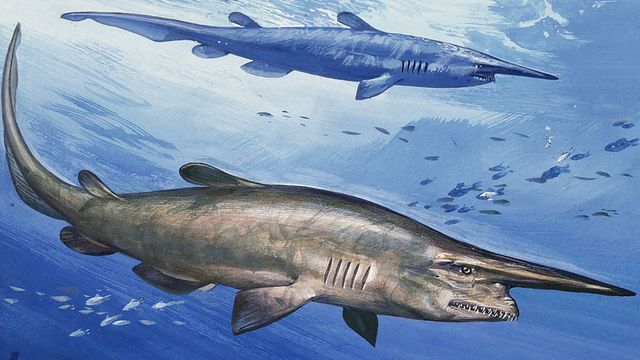Tiburón blanco
Es una especie de gran tamaño y depredador tope en muchos ecosistemas marinos. Se caracteriza por su cuerpo alargado y musculoso, su dentadura afilada y su gran velocidad y agilidad. A pesar de su fama de "devorador de hombres", los ataques de tiburones blancos a seres humanos son muy raros y en la mayoría de los casos se deben a errores de identificación.
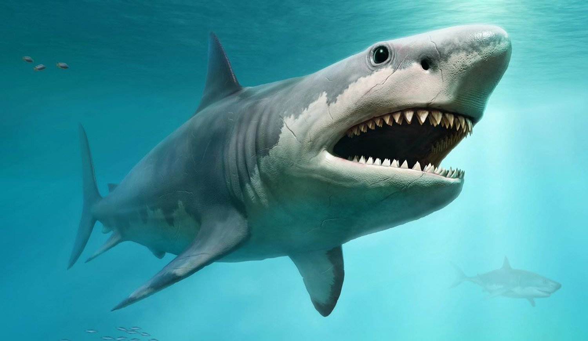Tiburón lobo
Es una especie que puede vivir durante siglos, lo que la convierte en una de las especies más longevas del planeta. Además, tiene una increíble capacidad para sobrevivir en aguas extremadamente frías y profundas, lo que le permite habitar regiones del Ártico donde pocos otros animales pueden sobrevivir. También se ha descubierto que su cuerpo produce una sustancia anticongelante, lo que le ayuda a evitar la congelación en las aguas frías del Ártico.
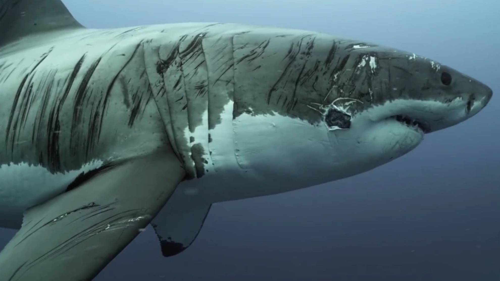Tiburón toro
Es robusto y de cuerpo pesado, con un hocico corto y redondeado, de color gris con una banda blanca en el costado. Puede alcanzar hasta tres metros de longitud y se alimenta de peces óseos, otros tiburones, tortugas, mamíferos y crustáceos. Vive en aguas costeras tropicales y subtropicales poco profundas en todo el mundo, cerca de la costa y en aguas de menos de 30 metros de profundidad. Debido a su tamaño y dentición, siempre debe tratarse con precaución. Las heridas causadas por esta especie tienen una tasa de infección más alta de lo normal, quizás debido a que el tiburón limpia la carroña y puede incursionar en áreas contaminadas.

Tiburón mako
Tiene un aspecto muy aerodinámico, lo que le confiere gran velocidad. Posee un característico azul metalizado. En la edad adulta, pueden alcanzar los cuatro metros de longitud. Tiene grandes dientes en forma de punzón sin aserrar. Es una especie litorales que se encuentra en aguas más cálidas.Suele cazar peces (incluidas especies de natación rápida como atún, bonito y pez espada), calamares y tiburones más pequeños. Presentan un comportamiento muy llamativo, y es que los embriones son ovofágicos: los hermanos pequeños son consumidos por hermanos mayores. Es el más rápido de todos los tiburones y famoso por sus espectaculares saltos desde el mar.Las mordeduras a buzos son raras. Sin embargo, dada su velocidad y agresividad, debe considerarse con precaución.
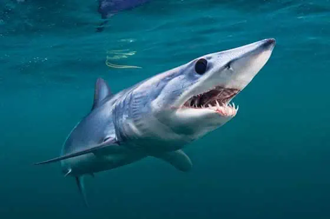Tiburón galano o limón
Apodado limón por su color amarillento, el Negaprion brevirostris es un gran tiburón de nariz corta y rechoncho que alcanza casi los tres metros de longitud. Es una especie costeras que pueden vivir en agua dulce.Se mueve por el atlántico occidental desde Nueva Jersey hasta el sur de Brasil, incluido el Golfo de México y el Mar Caribe. Atlántico norte oriental, incluido Senegal y Costa de Marfil. Pacífico oriental desde el sur de Baja hasta Ecuador. Suele cazar peces óseos, rayas, tiburones pequeños, crustáceos, moluscos e incluso aves marinas.Es un tiburón es nocturno, y está activo cerca de la costa: alrededor de muelles, arroyos de agua salada, estuarios, y bahías. Puede ser muy agresivo con los buzos si es molestado.
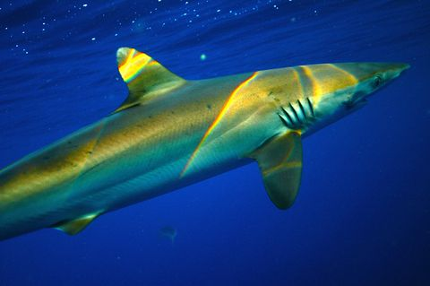Tiburón oceánico de puntas blancas
El Carcharhinus longimanus es un tiburón grande con grandes aletas redondeadas de punta blanca, dientes triangulares y aserrados. Se encuentra lejos de la costa, en mar abierto o cerca de islas oceánicas a unos 37 metros de profundidad en mares tropicales y templados cálidos. Esta especie se alimenta principalmente de peces óseos, cefalópodos, aves marinas, tortugas, mamíferos marinos y carroña, y puede ser agresivo y rápido cuando compite por la comida. Debido a su constitución pesada, mandíbulas y dientes fuertes y terca agresividad, siempre debe tratarse con precaución. La sobrepesca ha llevado a que la especie prácticamente haya desaparecido del Golfo de México.
Tiburón azul o tintorera
El Prionace glauca es un tiburón azul de hasta tres metros de longitud, con un hocico y aletas pectorales largas. Se encuentra en mares fríos, pero tolera aguas cálidas y cerca de la superficie en áreas profundas. Se alimenta principalmente de pequeños peces y calamares, pero es oportunista y se alimentará de tiburones, aves marinas, invertebrados y carroña. Las hembras adolescentes y adultas tienen una piel más gruesa que los machos para protegerse de ellos. Pueden ser muy activos y agresivos, y se sabe que atacan a las víctimas de naufragios.
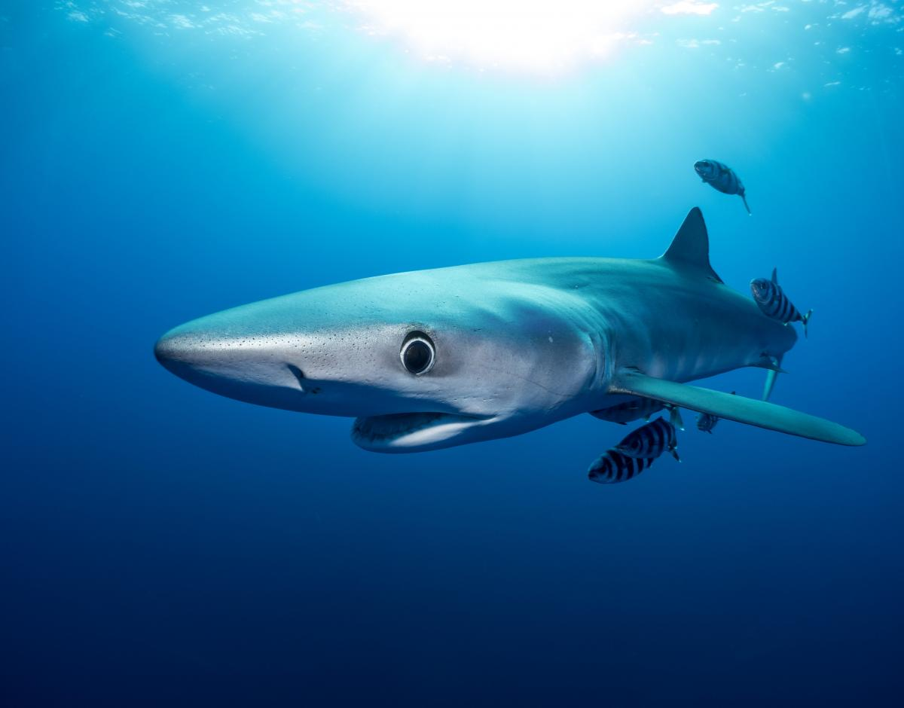Tiburón de las Galápagos
Carcharhinus galapagensis es un gran tiburón gris bastante delgado con un hocico redondeado y ancho que mide unos tres metros de largo. Posee dientes triangulares serrados ligeramente oblicuos en la mandíbula superior y dientes rectos y estrechos en la mandíbula inferior. Se encuentra en la costa y en alta mar cerca de plataformas continentales e insulares desde la superficie hasta al menos 180 metros de profundidad.Este tiburón se alimenta principalmente de peces como lubina, peces gatillo y anguilas, pero también se alimenta de peces voladores, pulpos, calamares y, a veces, consume residuos.El tiburón de las Galápagos tiende a ser agresivo. Las acciones violentas de los buzos pueden asustar al tiburón y empujarle a dar vueltas, atrayendo a más tiburones a su paso.
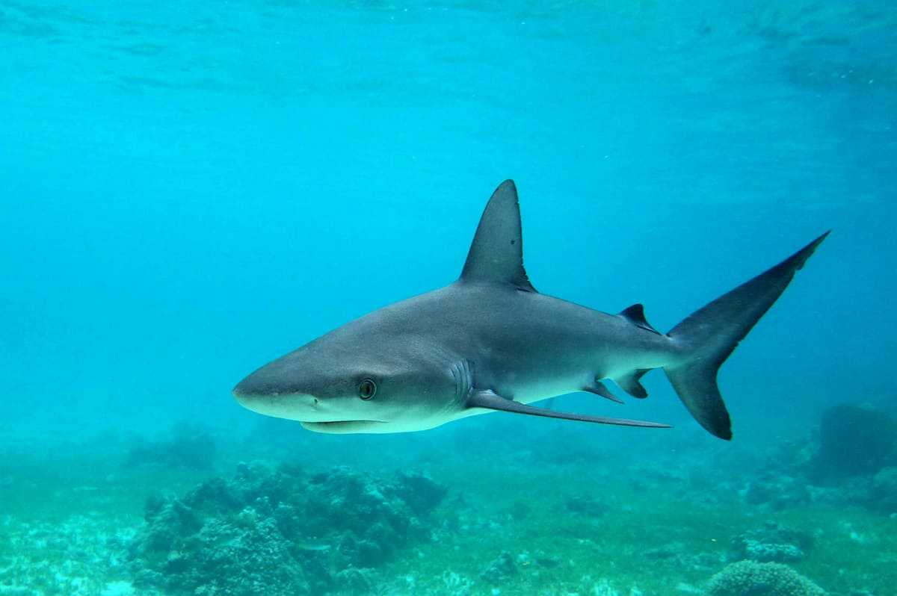Tiburón del arrecife o caribeño
El Carcharhinus perezi es un tiburón grande con un hocico corto y redondeado, una cresta interdorsal y sin marcas prominentes en sus aletas. La mayoría de los encontrados por los buzos son de aproximadamente metro y medio de longitud. Los dientes en ambas mandíbulas son aserrados.Este tiburón es un habitante tropical del fondo costero de las plataformas continentales e insulares. A menudo se encuentra en los arrecifes de coral y en lugares adyacentes a los descensos. Habita en el Atlántico occidental desde Florida hasta el sur de Brasil, Bahamas, Golfo de México y el Mar Caribe. Es el tiburón más común de los arrecifes de coral en el Caribe. Raramente es agresivo con los humanos.
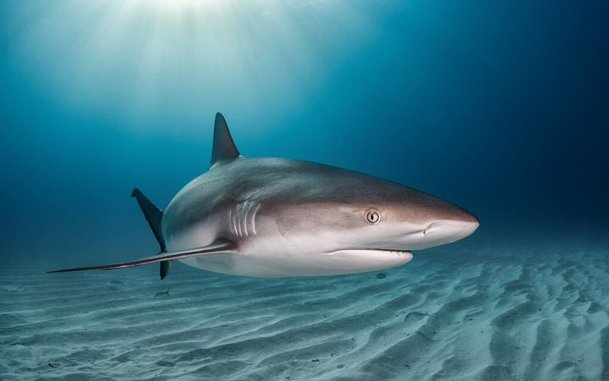Tiburón arenero o jaquetón lobo
El Carcharhinus obscurus es un gran tiburón gris con un hocico corto y ampliamente redondeado, sin marcas en sus aletas, y con una cresta interdorsal. Es de color gris a gris azulado, y blanco en la parte inferior. Este tiburón se encuentra en las plataformas continentales e insulares hasta una profundidad de 400 metros. Habita en mares cálidos, templados y tropicales.El jaquetón lobo se alimentan de animales que viven en el fondo. Los especímenes grandes se alimentan de una variedad de peces de arrecife que incluyen sardinas, atunes, anguilas, peces lagarto y peces planos, tiburones más pequeños, rayas, patines, calamares, pulpos, sepias, cangrejos, langostas, estrellas de mar, percebes e incluso carne de ballena.Este tiburón es migratorio en zonas templadas y subtropicales del Pacífico norte y el Atlántico norte occidental, y se mueve hacia el sur en invierno y hacia el norte en verano. En Australia, se les conoce como 'balleneros de bronce'.

Tiburón de puntas negras
El Carcharhinus limbatus es un tiburón de color gris oscuro, gris azul o bronce oscuro en la parte superior y blanco en la parte inferior, con puntas negras en todas sus aletas y una cresta interdorsal. Se encuentra en aguas costeras tropicales y subtropicales poco profundas, a menudo en estuarios y desembocaduras de ríos, y se alimenta de peces, tiburones pequeños, rayas, calamares y sepias. Aunque generalmente es indiferente a los buzos, puede volverse hiperactivo en situaciones de cebo y se ha visto implicado en numerosos incidentes no fatales con humanos.

Tiburón sedoso
Los ejemplares de Carcharhinus falciformis son de color marrón oscuro a bronce, y blanco en su zona inferior. Es un tiburón oceánico grande y delgado con un hocico redondeado y largo y una cresta interdorsal. Se encuentra cerca de los bordes de las plataformas continentales e insulares, así como en mar abierto. Pero también se encuentra en la costa y en áreas donde el agua tiene solo 45 centímetros de profundidad.Su dieta incluye el atún, salmonete y puercoespín, así como calamares y cangrejos. Es un tiburón activo, rápido y agresivo. Se encuentra con frecuencia en bancos de atún. Generalmente ignora a los buzos pero puede representar una amenaza cuando se le acercan.
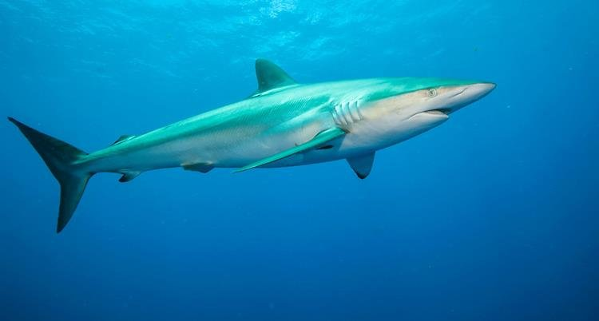Tiburón de arrecife gris
El tiburón de arrecife gris es una especie de tiburón común en los arrecifes de coral, con una longitud de unos 2.5 metros. Su hocico es moderadamente largo y redondeado, con dientes estrechos y dentados en la mandíbula superior y forma de punzón en la inferior. Su superficie dorsal es gris con una banda negra en el margen posterior de la aleta caudal. Se encuentra en áreas costeras profundas cerca del mar abierto y lagunas poco profundas adyacentes a áreas de fuertes corrientes. Es curioso y se acerca a los buzos en áreas poco frecuentadas, pero suele retirarse después de investigar. Si se siente amenazado, realiza una exhibición de amenaza con un patrón de natación exagerado que puede terminar en una carga de alta velocidad. Su esperanza de vida es de al menos 25 años.

Tiburón martillo
Esta curiosa especie de tiburón (Sphyrna mokarran) con la cabeza en forma de martillo, es de color verde oliva oscuro o gris parduzco. Se encuentra cerca de la costa y en alta mar. Se encuentra sobre las plataformas continentales, las terrazas de las islas y en los pasos y lagunas de los atolones de coral. Se encuentra cerca de la superficie y desde profundidades de uno a 80 metros.El gran tiburón martillo se alimenta de una amplia variedad de presas, pero favorece a las rayas, meros y bagres marinos. También se alimenta de calamares, cangrejos, sábalos, sardinas, peces sapo, arenques, mero, cofres, otros tiburones y rayas águila.Son una especie solitaria, nómada y migratoria. Algunas poblaciones se mueven hacia los polos durante el invierno. El tiburón martillo se alimenta principalmente al anochecer. Usan la parte inferior de su cabeza en forma de martillo para golpear y, posteriormente, morder a las presas.Se cree que la especie es peligrosa, aunque se le han atribuido pocos incidentes con humanos. Este tiburón se ha acercado a los buzos sin mostrar agresividad. Sin embargo, debido a su tamaño y amplio espectro de alimentos, debe tratarse con precaución.
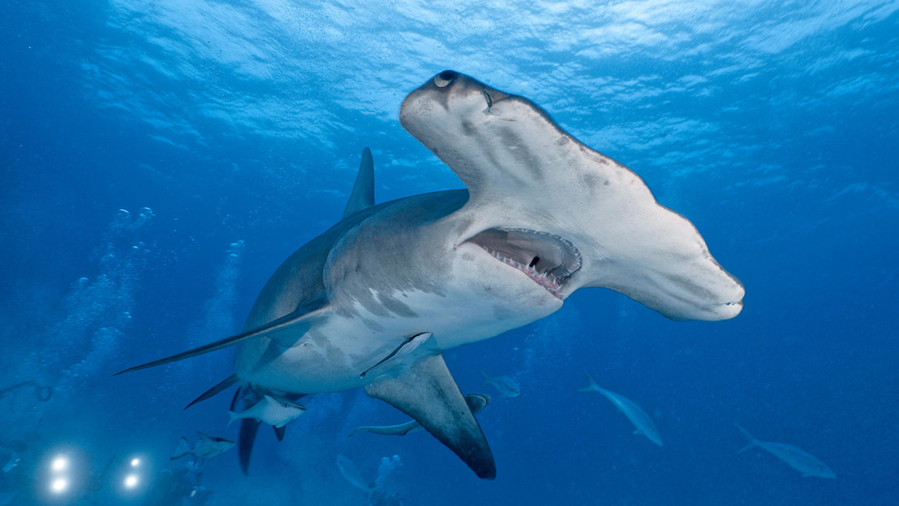Tiburón vaca
Este es un tiburón de cabeza ancha, ojos pequeños, con siete hendiduras branquiales y una sola aleta dorsal situada muy atrás en su cuerpo. El Notorynchus cepedianus es de un tono gris pálido arriba; blanco debajo. Además, posee pequeñas manchas negras en el cuerpo. Los dientes de la mandíbula superior son romos y puntiagudos; los de la mandíbula inferior son grandes, anchos y en forma de sierra. El tiburón vaca es marino suele habitar las plataformas continentales desde la superficie 46 metros de profundidad. Es una especie costera que se encuentra comúnmente en bahías poco profundas. Suele alimentarse de peces óseos, rayas y otros tiburones. Este es un tiburón activo y fuerte. Se mueve hacia la costa durante la marea alta y se retira de la costa durante la marea baja.La mayoría de los especímenes navegan cerca del fondo, pero también se pueden encontrar en la superficie. Los ejemplares jóvenes se encuentran con frecuencia en aguas poco profundas cerca de la costa. El tiburón es agresivo cuando se le provoca. En aguas de Australia y Nueva Zelanda, este tiburón se considera peligroso.
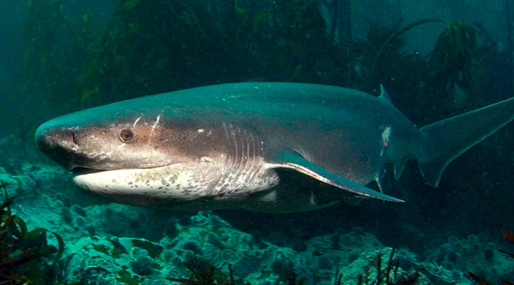Tiburón de peinetas o cañabota gris
La cañabota gris (Hexanchus griseus) es un tiburón robusto con seis hendiduras branquiales. Su única aleta dorsal se encuentra muy cerca de la aleta caudal. Suele habitar las plataformas continentales e insulares y en las pendientes superiores. Los jóvenes a menudo se encuentran cerca de la costa.Caza peces, tiburones pequeños y cefalópodos. Este tiburón es lento, pero buen nadador, nocturno y muy sensible a los altos niveles de luz. Debido a su gran tamaño y dentición, debe tratarse con precaución.
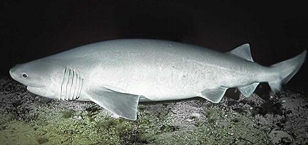Tiburón nodriza o bigotes de gato
El rasgo más característico del Ginglymostoma cirratum son sus grandes barbillas nasales y aletas dorsales del mismo tamaño. Los jóvenes pueden tener manchas oscuras.Miden unos tres metros de longitud y habitan desde la costa entre mareas hasta profundidades de 50 metros, entre rocas y arrecifes de coral y en manglares. Su población se distribuye por el Atlántico occidental desde el sur de Brasil, incluido el Golfo de México y el Mar Caribe. Atlántico oriental en las islas de Cabo Verde y a lo largo de la costa de África occidental. Pacífico oriental desde el sur de Baja hasta Perú.Consume peces pequeños e invertebrados: langosta, camarones, cangrejos, calamares, erizos de mar, pulpos, caracoles y bivalvos. Este es también un tiburón nocturno; es un nadador fuerte y activo por la noche, pero es lento durante el día. Usa sus aletas pectorales musculares para trepar por el fondo, pero normalmente se le ve acostado, inmóvil y, a menudo, con la cabeza en una grieta.El tiburón nodriza tiene un hogar fijo bien definido y puede regresar al mismo sitio de descanso durante el día por largos períodos de tiempo. Es de carácter plácido y generalmente indiferente a los buzos.

Tiburón tigre de arena o tiburón damisela
El Carcharias taurus tiene una característica joroba pronunciada en la espalda y ambas aletas dorsales son aproximadamente del mismo tamaño. Puede tener manchas marrones en su cuerpo, y una longitud máxima de tres metros. Habita desde bahías poco profundas, rocas y arrecifes de coral, hasta los 190 metros de profundidad.Habita en aguas cálidas y templadas en todo el mundo. Principalmente come peces, pero también se alimenta de crustáceos y calamares.El tiburón de arena a menudo nada con la boca entreabierta y los dientes visibles. Los buzos generalmente ven al tiburón cerca del fondo, navegando entre uno y dos metros o flotando casi inmóvil en cortes en el arrecife o en la arena donde la corriente es más fuerte. Esta especie es migratoria, moviéndose a aguas más profundas en invierno.El tiburón de arena es generalmente plácido, a pesar de su aspecto feroz. Si un buzo se acerca demasiado, el tiburón golpeará con su cola con fuerza, creando un fuerte sonido que hará zumbar los oídos.
Tiburón alfombra manchado
Este es, sin duda, uno de los tiburones más curiosos y llamativos. El Orectolobus maculatus posee una asombrosa habilidad de camuflaje, como se puede observar. Dientes grandes y muy afilados, como colmillos. Habita en los arrecifes costeros tropicales del Pacífico occidental. Se alimenta de los peces que viven en el fondo e invertebrados.Normalmente, descansa en el fondo durante el día y ronda el arrecife por la noche para alimentarse, trepando por el uso de sus aletas emparejadas. Los buzos con frecuencia se acercan y lo fotografían durante el día sin incitar a la agresión, pero ha de ser tratado con precaución debido a su formidable dentición.
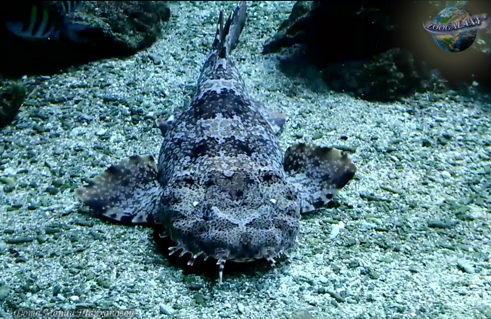Tiburón de aleta negra
El Carcharhinus brevipinna es de apariencia similar a un tiburón de punta negra, pero tiene una primera aleta dorsal algo más grande. Además, las aletas de los jóvenes no están marcadas. Puede medir hasta dos metros y pesa unos 56 kilogramos.Esta especie tiene una mandíbula estrecha y pequeños dientes con cúspides estrechas, típico de un 'come-peces'. Habita en las plataformas continentales e insulares, común en aguas costeras poco profundas desde la superficie hasta el fondo. A menudo su ruta de alimentación atraviesa bancos de peces, y termina en un salto giratorio fuera del agua. Ha mordido a algún humano, pero nunca letalmente.
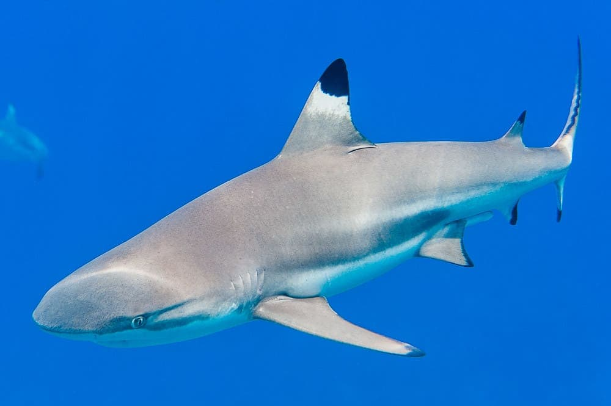Tiburón cobre
Es de color gris oliva o bronce (de ahí su nombre) y mide unos tres metros de largo. Los dientes superiores tienen una forma distintivamente situada hacia afuera. Suele vivir en las aguas templadas del Atlántico, Mediterráneo e Indo-Pacífico, hasta profundidades de 100 metros. Se alimenta de peces del fondo marino, cefalópodos, tiburones más pequeños y rayas.El Carcharhinus brachyurus, como otros tiburones que hemos visto anteriormente, es muy activo yde rápido movimiento, y puede saltar fuera del agua.
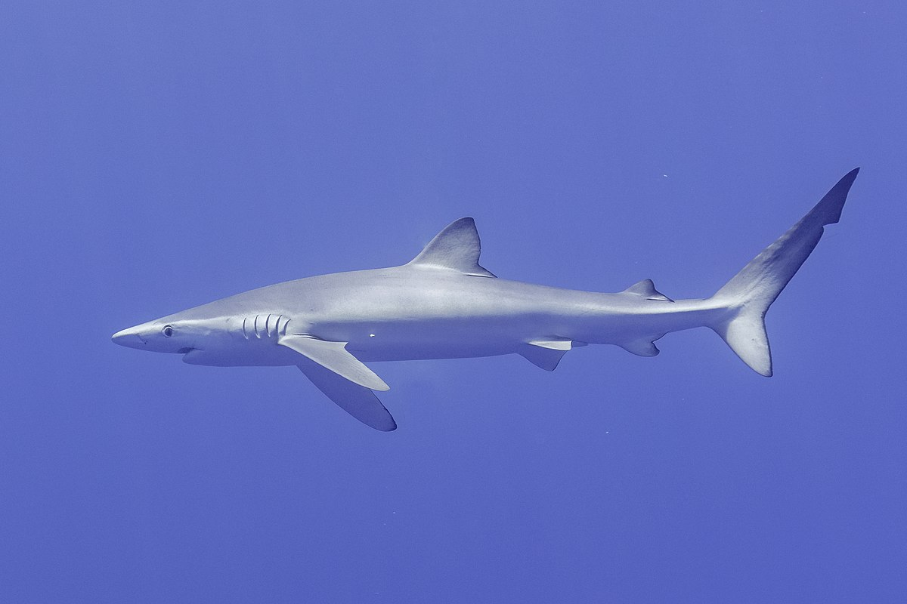Tiburón anguila
El Chlamydoselachus anguineus es una de las especies de tiburón más curiosas, y una de las más antiguas conocidas, prehistórica. Su forma es más parecida a la de una serpiente y su mandíbula es estrecha. Tiene una esperanza de vida de unos 50 años.Es una variedad poco común y se desconoce la población de esta especie, pero se le ha visto a profundidades de 50 a 1600 metros en aguas frías y templadas.
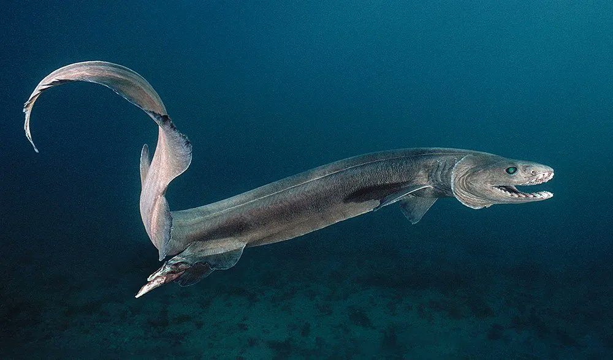Tiburón ballena
El tiburón ballena (Rhincodon typus) es uno de los peces de mayores dimensiones de la Tierra, y se cree que tiene una antigüedad de 60 millones de años. Es de un color gris intenso y está cubierto de líneas blancas y amarillas. Puede llegar a medir 20 metros de largo y pesar 34 toneladas. Las hembras pueden tener hasta 300 descendientes.Suele vivir en aguas tropicales y subtropicales a unos 700 metros de profundidad, donde existe abundante plancton. Es perseguido por los pescadores por las peculiaridades de su piel y por su carne. Su carácter es, irónicamente, muy pacífico con los humanos.
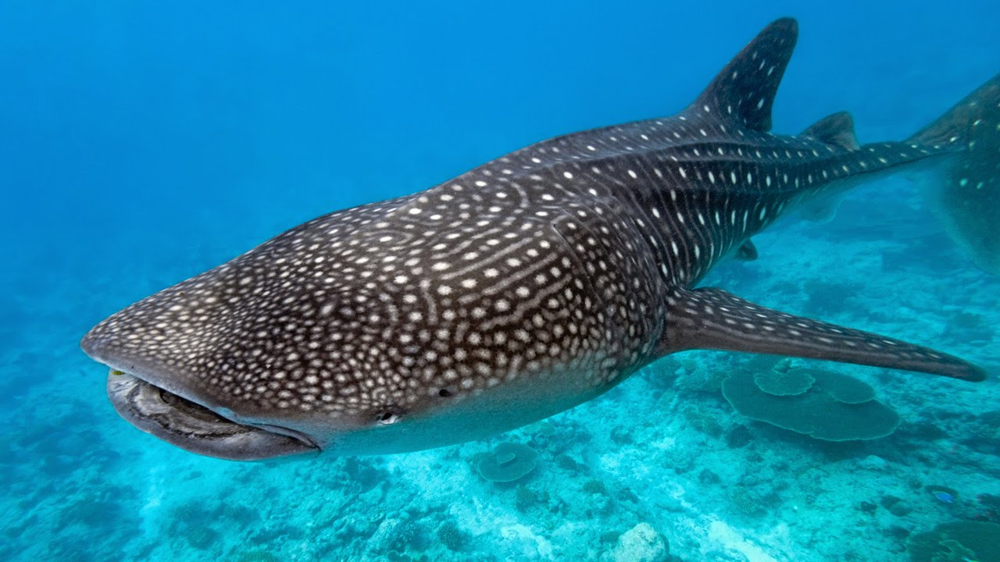